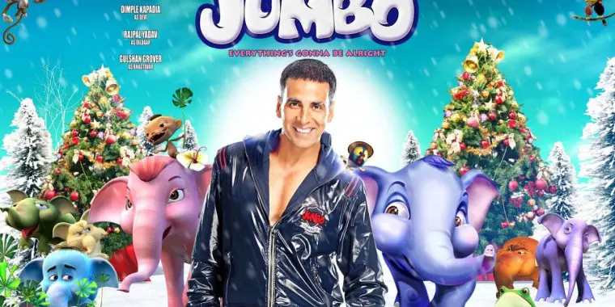

Animation in Indian Cinema
Animation is a unique and imaginative genre that brings stories to life through drawings, computer graphics, and visual effects. Bollywood's animation industry has grown over the years, combining traditional hand-drawn techniques with cutting-edge digital technology to create films that appeal to audiences of all ages.
Popular Animation Styles
- Traditional Animation: Hand-drawn frames creating a classic visual experience (e.g., Bal Ganesh).
- 3D Animation: Computer-generated imagery that brings characters and worlds into realistic depth (e.g., Chhota Bheem and the Curse of Damyaan).
- Stop Motion: Using physical objects moved frame-by-frame for animation (less common in Bollywood).
- Hybrid Animation: Combining live-action with animated elements to create magical effects.
Notable Animated Films
- Bal Ganesh (2007, dir. Vijay S. Bhanushali) – Mythological stories of Lord Ganesh in animation form
- Delhi Safari (2012, dir. Nikhil Advani) – Adventure-comedy focusing on wildlife conservation
- Jumbo (2008, dir. Kompin Kemgumnird) – Story of a baby elephant’s journey
- Chhota Bheem series – Popular Indian animated TV and film franchise
- Arjun: The Warrior Prince (2012, dir. Arnab Chaudhuri) – Epic tale based on the Mahabharata
|

|